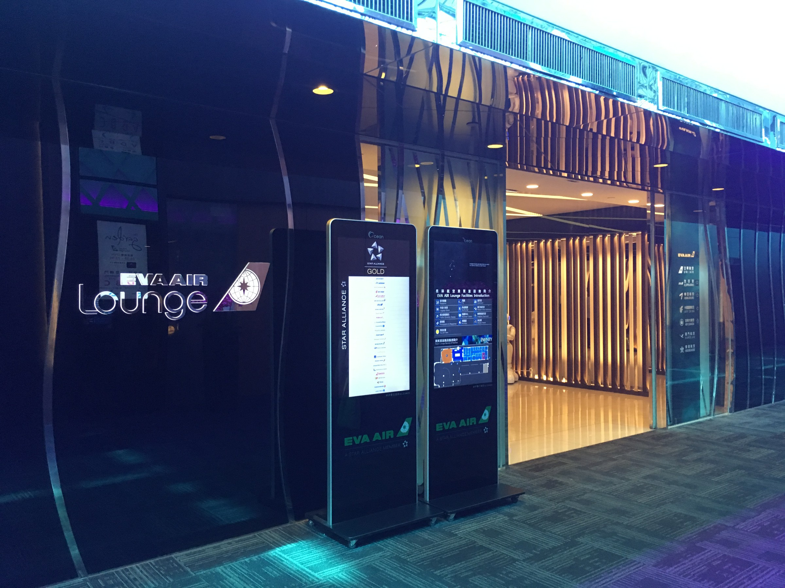
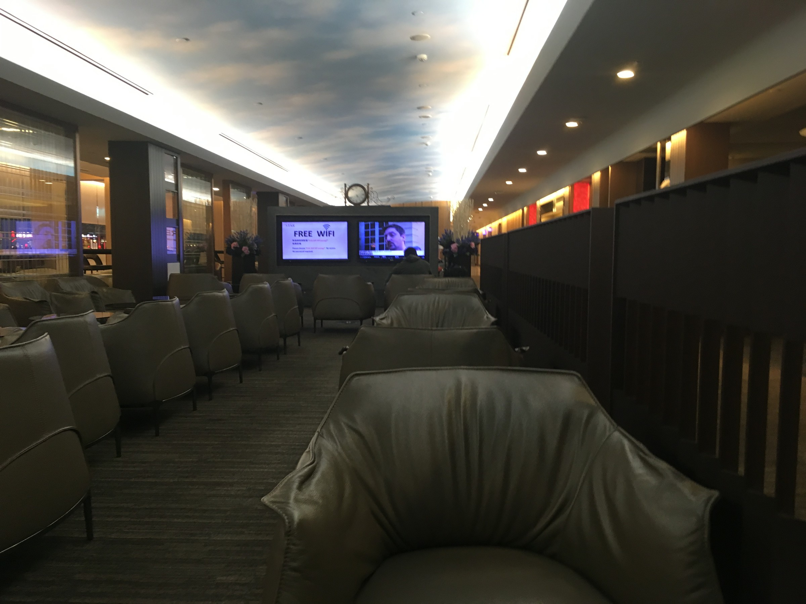
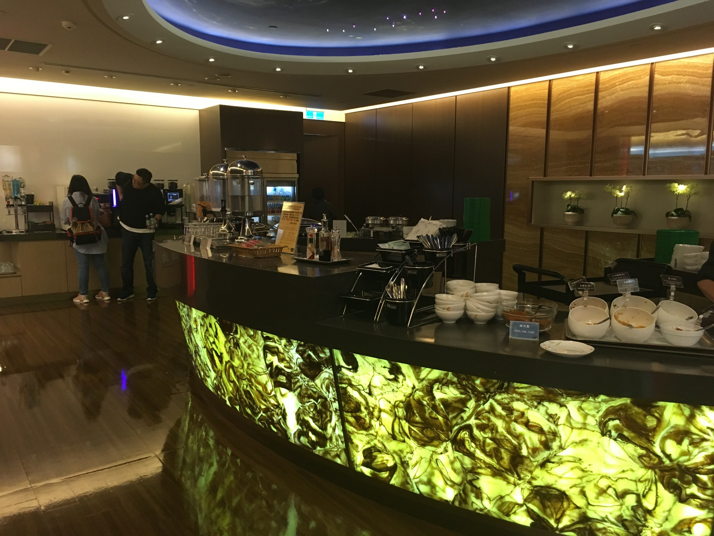
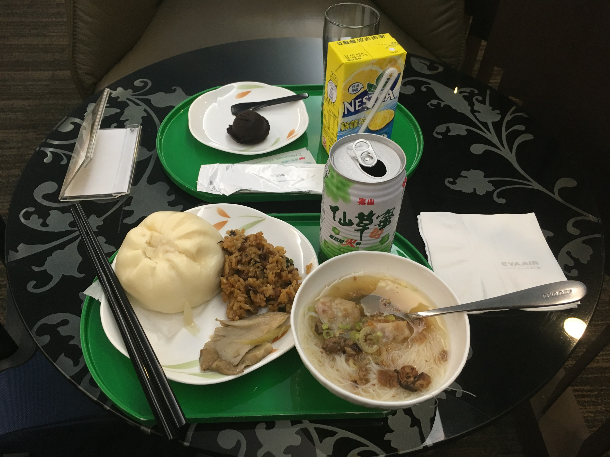
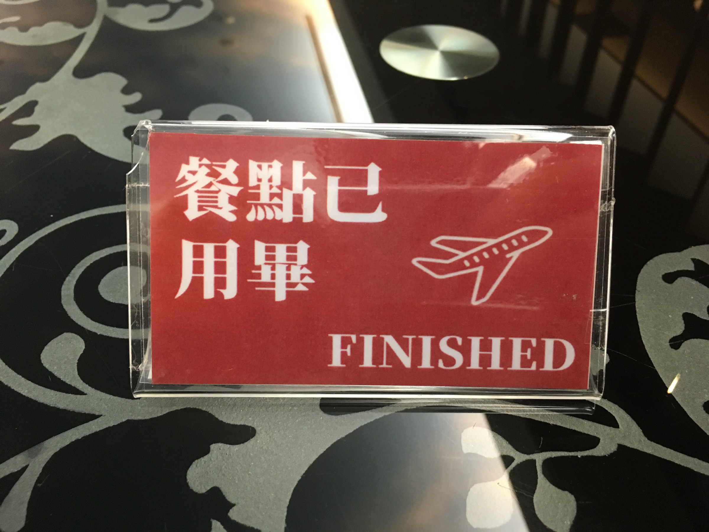
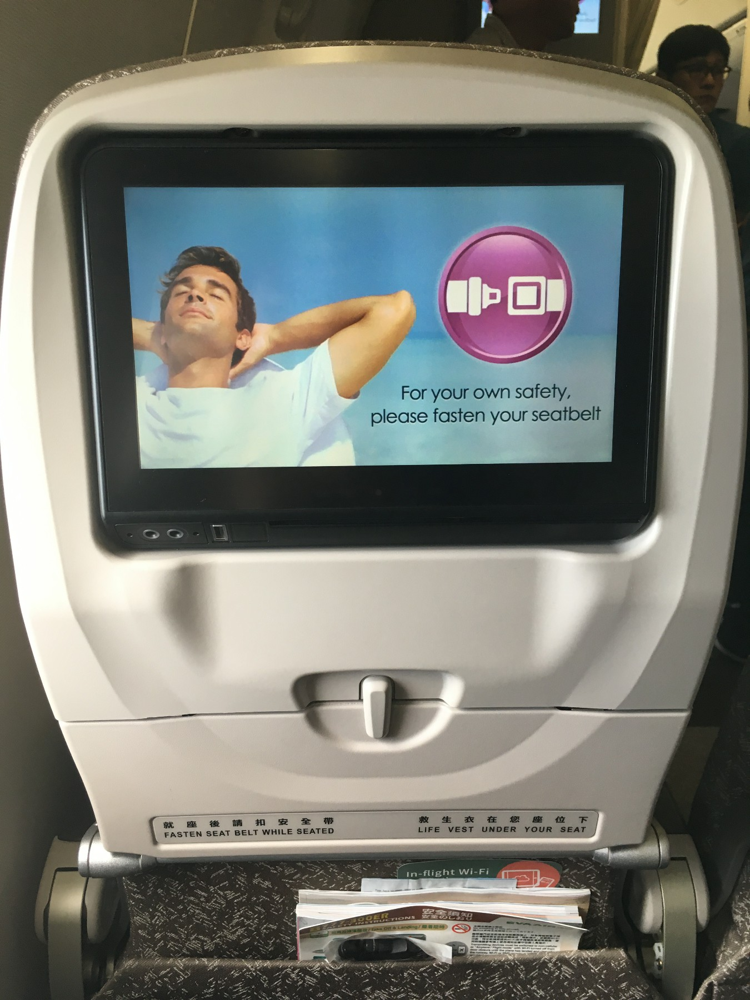
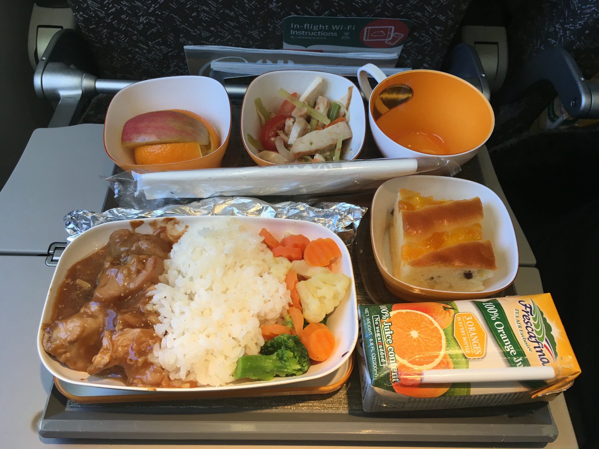
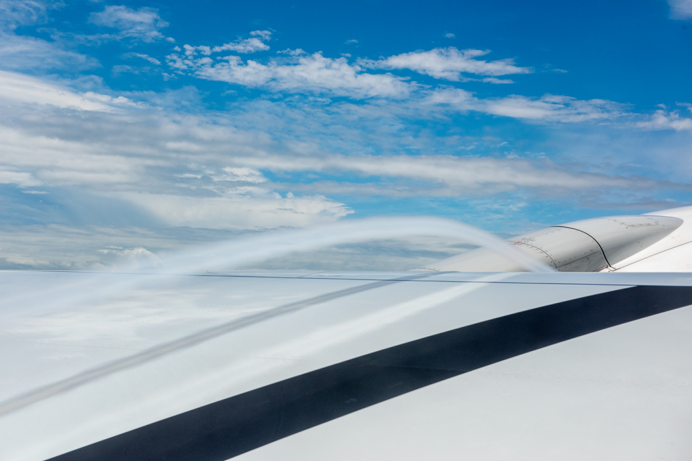
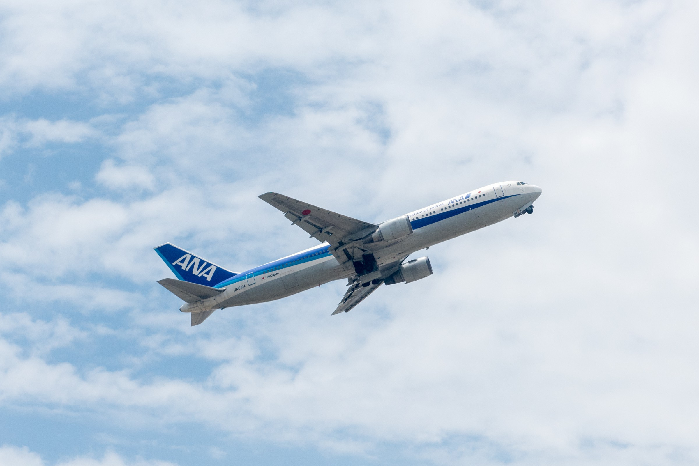

B-16738, EVA Air Boeing 777-300ER
Home - Articles - This article
B-16738, EVA Air Boeing 777-300ER
There are 5 hours to spend after arriving into Taipei from Chicago. Most time are spent in the famous EVA Air lounge. Since the next trip is only in Economy class, I was offered to use the Star for gold members.
There are four lounges operated by EVA Air. The Star is for gold members (including star gold), the Infinity is for Business / First class passengers. These two shares the same entrance with the Star on the left side, and the Infinity on the right. There are also the Club for EVA Air silver members (not star silver, but star gold can also use this one), and the Garden for EVA Air diamond members (only their own highest tier members can use this one).

The entrance to the Star and the Infinity looks very cool.
Since the flight arrived very early, there is only a few people in lounge. However, the dining area is ready with a wide range of selections. Since I just had breakfast on the flight, I didn't eat a lot.

Inside the lounge

Huge dining area

There are definitely more than just these

The sign to tell the server to cleanup, or not to cleanup if you are away using the other side
There are more and more people coming in after 7am but it is not hard to find a seat. Overall, this is a top-level lounge with great food selections.
I started moving to the gate at 9:15 to make sure I'm on the first group to board the plane. It is a full flight with 10 seats per row in economy, so there will be trouble finding a space in luggage rack if boarding too late.
Soon after seated, a cabin attendant brought the bag of duty free items I preordered online. This is when I realized the Hello Kitty bags seen on the Chicago flight was for duty free. The idea of distributing duty-free items early is very nice. I don't have to worry about it anymore. On ANA, they usually pass the preordered items in the last hour of flight. This made more sense for a flight that is only less than 500 miles and takes only over an hour from takeoff to touchdown.

The seat
We pushed back right on time and was in the air 15 minutes afterwards. The meal service is provided soon after reaching the cruising altitude. For a flight that is only over an hour, the meal is beyond exception. The main dish is garlic chicken with rice, and there are also salad, fruits, and dessert. This is even better than some airlines' transpacific flight. However, due to the short time of flight, there is no beverage service other than the orange juice in the tray. There are coffee and tea served, though.

Meal served

The air flow during takeoff
Due to the unique flight routes between Taiwan and mainland China, the flight took an S shape to reach Shanghai. Nevertheless, we arrived into Pudong right on time.

An ANA B767 departin from Shanghai for Osaka
For such a short flight, the service provided in economy class is very nice. The lounge in Taipei is also excellent. This is an airline that well worth the five stars rating, and well worth flying again.